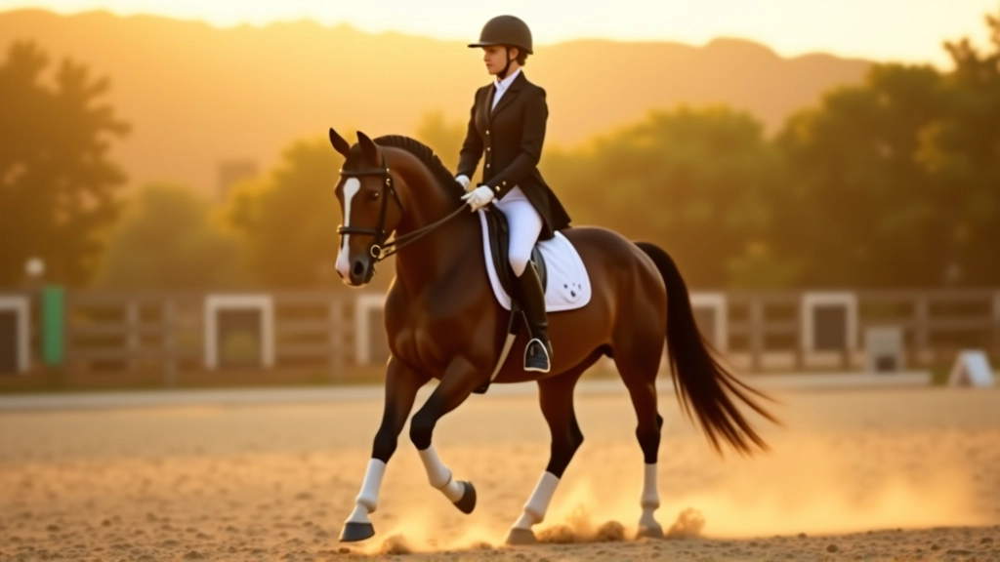
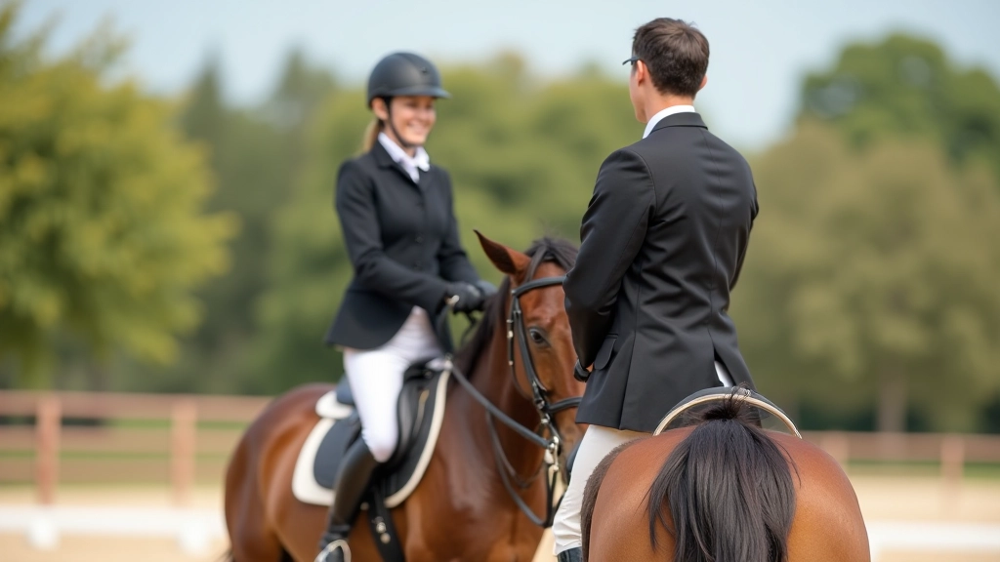
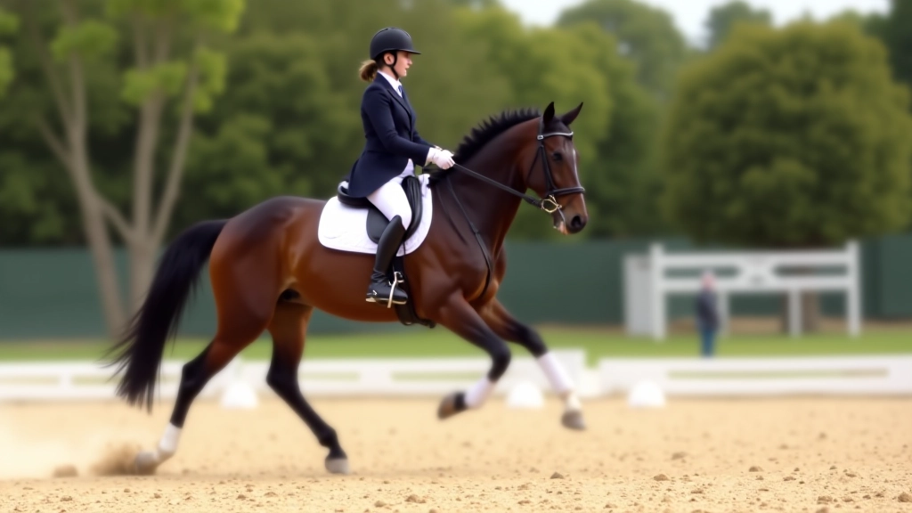
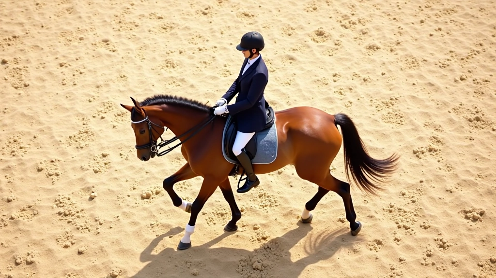

أساسيات انتقال المشي: البداية الصحيحة
يشرح هذا الدليل خطوات البدء الصحيحة لتعليم حصانك انتقالات المشي الأساسية مع الترويض.
تقنيات متقدمة لتعليم حصانك التوقف المثالي مع الحفاظ على الانتباه والاستجابة للإشارات الدقيقة


كتبه فريق إسطبل النيل التحريري، المتخصص في تقديم إرشادات عملية وموثوقة عن تدريب الخيل والترويض.
التوقف المثالي ليس مجرد وقفة عادية — إنه تعبير عن التحكم الكامل والتفاهم العميق بينك وبين حصانك. عندما يتعلق الأمر بالترويض، يصبح التوقف واحداً من أهم العناصر التي تعكس مستوى التدريب والاستجابة. هذا الدليل يساعدك على فهم التقنيات الحقيقية وراء التوقف المتقن.
ستتعلم هنا كيفية بناء التوقف من الصفر، بدءاً من الإشارات الأساسية وصولاً إلى التوقفات المتقدمة التي تتميز بالثبات والدقة. نحن نركز على الممارسة الفعلية، وليس النظرية المجردة.

قبل أن تتوقع من حصانك توقفاً مثالياً، يجب أن تبني الأساس بشكل صحيح. نبدأ دائماً من المشي. التوقف الجيد ينطلق من خطوة مشي قوية ومنتظمة.
الإشارة الأساسية تتضمن ثلاثة عناصر رئيسية: أولاً، استرخاء الحوض والجلوس بشكل أعمق في السرج. ثانياً، تثبيت الساقين بثبات دون ضغط مفرط. ثالثاً، سحب اليدين بنعومة نحو الخلف مع الحفاظ على التوازن.
المفتاح هنا هو التدرج. لا تتوقع توقفاً فوري من أول محاولة. تحتاج إلى حوالي 20-30 جلسة تدريب لترسيخ الاستجابة الأساسية عند معظم الخيول.
نصيحة عملية: ابدأ بتمارين التوقف على مسافات قصيرة — كل 10-15 متراً من المشي. هذا يساعد الحصان على فهم الإشارة بشكل أسرع وأسهل.


بمجرد أن يستجيب الحصان للإشارة الأساسية، تنتقل إلى المرحلة التالية: تحسين السرعة والحدة. هنا نركز على تقليل عدد الخطوات بين الإشارة والتوقف الفعلي.
في البداية، قد يحتاج الحصان إلى 4-5 خطوات للتوقف التام. الهدف هو الوصول إلى توقف فوري في خطوة واحدة أو خطوتين على الأقل. هذا يتطلب تكراراً منتظماً وإشارات واضحة.
أثناء هذه المرحلة، لاحظ أن الحصان قد يحاول التوقف بسرعة أكبر من المطلوب. كن صبوراً — هذا علامة جيدة تدل على فهمه. استخدم اللمس الخفيف والصوت الهادئ لتنظيم توقفه.
التوقف السريع ليس كافياً — يجب أن يكون مستقيماً وثابتاً. هذا هو الفرق بين توقف جيد وتوقف ممتاز. الاستقامة تعني أن تكون الأرجل الأربع في خط واحد دون أي انحراف جانبي.
لتحقيق هذا، ركز على ثلاث نقاط: أولاً، التوازن المتساوي على جميع الأرجل الأربع. ثانياً، الرقبة المستقيمة والرأس في الموضع الصحيح. ثالثاً، عدم الرجوع للخلف أو الانزلاق إلى الأمام بعد التوقف.
يستغرق تطوير هذا المستوى من الدقة وقتاً أطول — عادة 8-12 أسبوعاً من التدريب المنتظم. لكن النتيجة تستحق الانتظار.
يتوقف الحصان لكن قد يكون منحرفاً قليلاً، وقد يحتاج إلى تصحيح طفيف.
استقامة تامة، ثبات كامل، استجابة فورية، وعدم أي حركة غير مرغوبة بعد التوقف.

هذا الدليل يقدم معلومات تعليمية عامة عن تدريب التوقف في الترويض. كل حصان فريد بخصائصه وطبيعته الخاصة. إذا واجهت صعوبات في التدريب أو لاحظت مشاكل صحية أو سلوكية، يُنصح بشدة بطلب المساعدة من مدرب ترويض متخصص أو بيطري. ما يعمل مع حصان قد لا يعمل مع آخر، لذا التكيف والمرونة أساسيان في أي برنامج تدريب.
إتقان التوقف يتطلب صبراً، تركيزاً، والتزاماً بالممارسة المنتظمة. لكن عندما تحقق هذا الهدف، ستشعر بفرق حقيقي في الاتصال بينك وبين حصانك. التوقف المثالي هو أكثر من حركة — إنه تعبير عن الثقة والفهم المتبادل.
ابدأ من الأساسيات، كن متدرجاً في التطور، وركز على الجودة قبل السرعة. مع الوقت والممارسة، ستلاحظ تحسناً مستمراً في استجابة حصانك واستقامة توقفه.
اكتشف المزيد من الأدلة والتقنيات المتقدمة
يشرح هذا الدليل خطوات البدء الصحيحة لتعليم حصانك انتقالات المشي الأساسية مع الترويض.

تعرّف على المشاكل الشائعة التي يواجهها المتدربون وكيفية تصحيحها لتحسين جودة الانتقالات.

خطة تدريب منظمة تغطي جميع مراحل التطور من التوقف البسيط إلى الانتقالات المتقدمة.